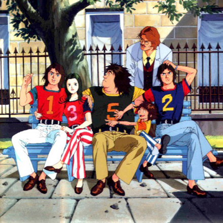
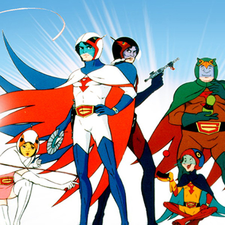

ストーリー
科学忍者隊はソーラーシフト計画を成功の一歩手前で阻止し、総裁Xの野望を打ち砕いた。ソーラーシフト計画で荒れ果てた地球は徐々にではあるが復興を始めていた。その一方で、ドクター・ラッフェルを失い、彼の手によりサイボーグとして生まれ変わったジョーに内蔵されたブラックボックスの解析とエネルギー補給の目処は進まず、日を追う毎に死が近づいていく……。
ニューゴッドフェニックスを撃墜され、満身創痍の4人（ジョー以外）を救った鴨三郎技師長は彼らをガッチャマン基地へと迎え入れ、新たなる翼「ガッチャ・スパルタン」と新たな武器「ガッチャマンフェンサー」（剣）等を与える。ジョーのエネルギー補給の目処も立ち、健は仲間達とともに三度ギャラクターを迎え撃つ。が、ガッチャマンフェンサーは健の命をも削るという、文字通り両刃の剣であることを5人はまだ知らない……。